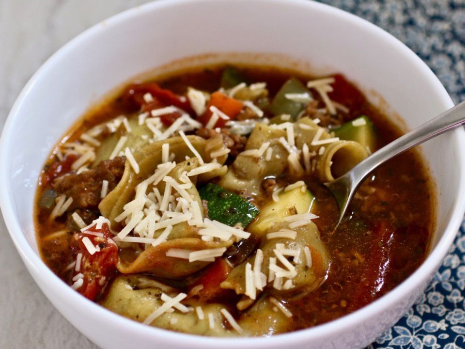

Tortellini Soup

Description
This tortellini soup is vegetarian but packs a lot of flavor and you may not even miss the meat. Pair with crusty French bread.
Ingredients
- 1 tablespoon olive oil
- 1 small onion, finely chopped
- 3 cloves garlic, minced
- 1 small tomato, finely chopped
- 1 zucchini, quartered and sliced
- 1 package cheese tortellini
Steps:
- Heat olive oil in a saucepan until shimmering over medium heat.
- Add chopped onions, garlic and tomato ; cook until soft about 5 minutes.
- Mix in zucchini and tortellini. Cover and cook until tortellini float on the top and are cooked through, 8 to 10 minutes.
scroll to top